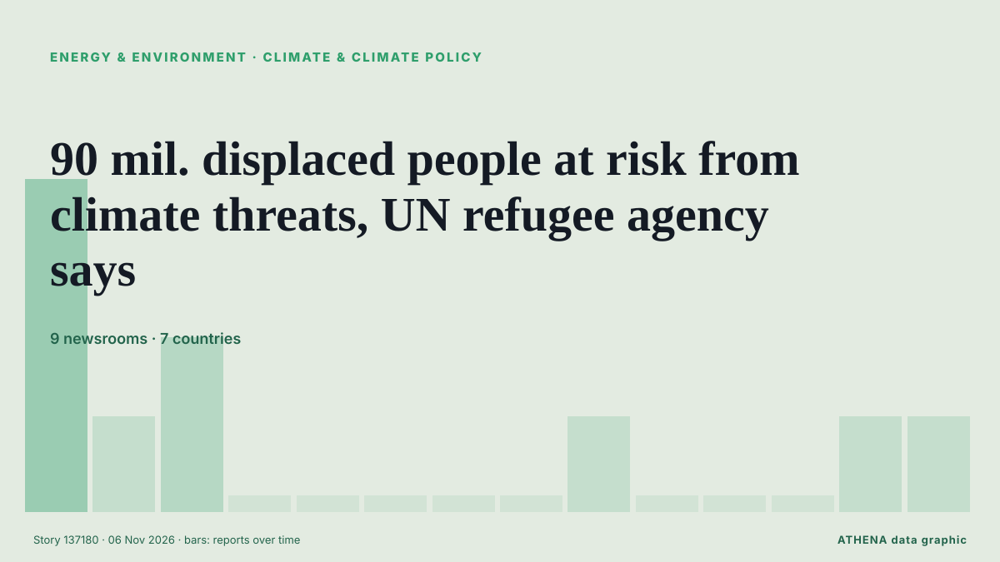

Clima y política climática
PatrocinadoPresentado por  Cybernetics and Artificial Intelligence Lab Welcome to the Cybernetics and Artificial Intelligence Laboratory, established at the Department of Business Administration of the National and Kapodistrian University of Athens. The lab is headed by Professor Dimitrios Thomakos. The lab aims to do research that can be published in top venues. Our research uses tools and methods of Artificial Intelligence, and lies in the following areas: - Forecasting - Decision making - Cyber security - Finance We are always looking forward to collaborating with exceptional students!
Cybernetics and Artificial Intelligence Lab Welcome to the Cybernetics and Artificial Intelligence Laboratory, established at the Department of Business Administration of the National and Kapodistrian University of Athens. The lab is headed by Professor Dimitrios Thomakos. The lab aims to do research that can be published in top venues. Our research uses tools and methods of Artificial Intelligence, and lies in the following areas: - Forecasting - Decision making - Cyber security - Finance We are always looking forward to collaborating with exceptional students!
| 24 oct | 0 |
|---|---|
| 25 oct | 0 |
| 26 oct | 0 |
| 27 oct | 0 |
| 28 oct | 0 |
| 29 oct | 1 |
| 30 oct | 0 |
| 31 oct | 0 |
| 1 nov | 0 |
| 2 nov | 1 |
| 3 nov | 3 |
| 4 nov | 4 |
| 5 nov | 7 |
| 6 nov | 2 |
Los titulares se muestran en inglés, tal como se publicaron.

90 mil. displaced people at risk from climate threats, UN refugee agency says
Nearly 90 million forcibly displaced people are living in countries increasingly exposed to climate-related droughts, floods and extreme heat, the UN refugee agency said on Friday, warning ahead of… de The Korea Times
The Tropical Forest Forever Facility turns one, and is billions short
Meant to pay countries for keeping forests standing, the fund has an interim charter, a board, a World Bank home… and insufficient funds. de Eco-Business
International News: UN report warns developing countries need $305 billion annually for Climate Adaptation
By Zoila Palma: Developing countries will need an estimated $305 billion annually by 2035 to adapt to the worsening impacts of climate change, nearly 10 times the amount they currently receive from… de Breaking Belize News
Democrats’ Big Statehouse Wins Could Transform Climate and Energy Policy
Before Tuesday’s election, Republicans held more governorships and state legislative seats than Democrats, along with an advantage in state trifectas—unified control of the governor’s office and both… de Inside Climate News
Pro-Israel Republican Rep. Mike Lawler concedes to Democratic challenger Cait Conley in NYC
Lawler, a former state assemblyman, has worked tirelessly during two terms on Capitol Hill to build his brand as the quintessential suburban moderate Republican. de The Jerusalem Post
StormGeo Partners with China Classification Society to Advance Digital Emissions Verification in China
StormGeo, a provider of weather intelligence and maritime technology and part of Alfa Laval’s Ocean Division, has joined forces with the China Classification Society (CCS) to help digitalize… de MarineLink
Armenian PM Pashinyan to visit Türkiye to attend COP31
Pashinyan confirms plans to visit Antalya after receiving invitation from Turkish President Erdogan in September. de Anadolu Agency (English)
Antalya green zone to serve as COP31 climate action hub
Türkiye is creating a 582,000-square-meter Green Zone in the southern province of Antalya for the COP31 climate summit to connect everyday citizens, entrepreneurs, and businesses through actionable… de Hürriyet Daily News
Six measures could save 1.6m lives a year: WHO
The WHO report said implementing six measures could deliver a 'triple dividend' of healthier people, lower emissions and stronger economies. de Free Malaysia Today
Rich countries fall far short on climate adaptation funding, UN says
Countries are preparing to meet in Turkey from Nov 9 to 20 for the next round of climate talks. de The Straits Times
Brazil wraps up COP30 with fossil fuel, forest roadmaps, urging shift from talks to action
'We don't need more negotiations. What we need is for governments to start taking action,' says COP30 president Correa do Lago, who led last November's UN climate summit in Belem. de Rappler
CMA CGM, Nike and Gemadept officially launch electric barge in Vietnam
CMA CGM, Nike and Vietnamese port operator Gemadept have officially launched a fully electric container barge solution in Vietnam, connecting inland cargo operations with the Gemalink deep-sea… de Container News
Afghanistan's Taliban officials will attend UN climate summit for second time
Afghanistan's Taliban officials have been invited and will attend the upcoming U.N. climate summit as observers. de ABC News (International)